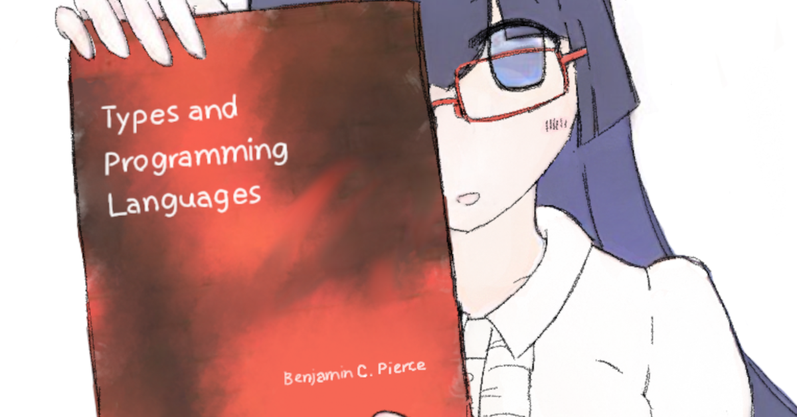

DJ / Producer. [bandcamp / soundcloud / mixcloud]
Please contact me on Discord: cannorin (preferred) or Twitter: @cannorin3.
Recurring Appearances
- The Underground (Organizer Since 2019, Irregular Schedule, VRChat)
- GHOSTCLUB (Resident DJ Since 2020, Irregular Schedule, VRChat)
- system crash (Resident DJ Since 2022, Every 4th Monday, Bhanc, Osaka)
Past Apperances
- embodiment (May 19 2023, 夜来香, Osaka)
- SANRIO Virtual Festival 2023 in Sanrio Puroland (Jan 21-22 2023, VRChat)
- miracle☆sugar - sato♡shin & TohLPeaks Release Party (Oct 30 2022, Namba BEARS, Osaka)
- SANRIO Virtual Fes in Sanrio Puroland (Dec 11-12 2021, VRChat)
- Many more appearances at various VRChat DJ events since 2019...

Full-stack IT Engineer / Student on Mathematical Logic.
Skills
- Full-stack Web Development (Frontend, Backend, Database).
- Compiler & Developer Tooling (Parser, Type System, Package Manager, Build System).
- Library Development & Document Writing.
- I am fluent in: C#, F#, OCaml, TypeScript.
Works
- nml
- flxble
- FSharp.CommandLine
- ocsigen/ts2ocaml
- fsprojects/FSharpPlus (maintainer)
- ionide/Ionide-vim (maintainer)
- ゴーストクラブ.コム (frontend & backend)
- More on GitHub.
Field of Study
- Modal Logic
- Application of Mathematical Logic to Computer Engineering
Papers
- Kurahashi, Sato. The finite frame property of some extensions of the pure logic of necessitation. 2023. arXiv:2305.14762.